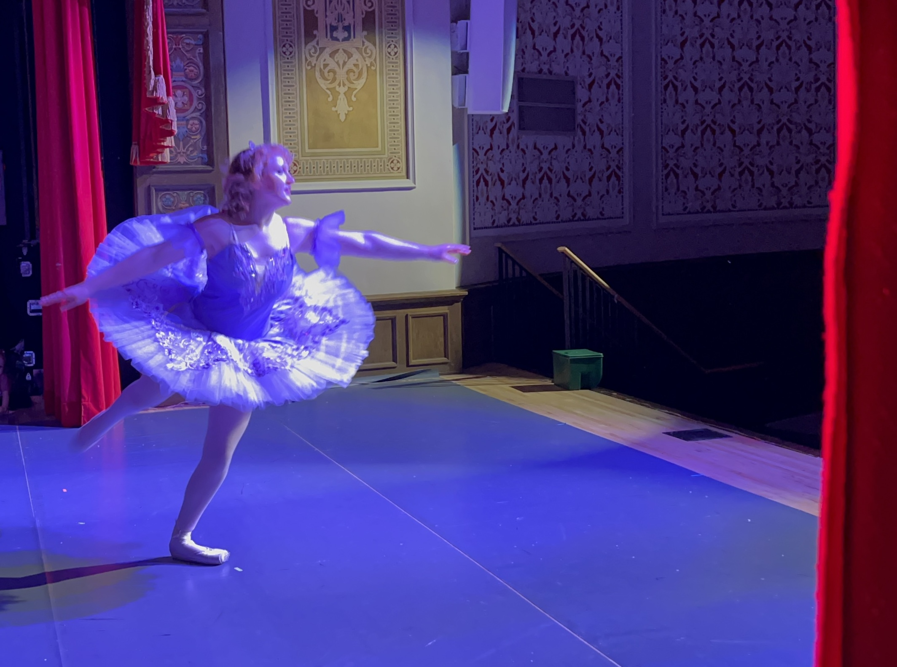
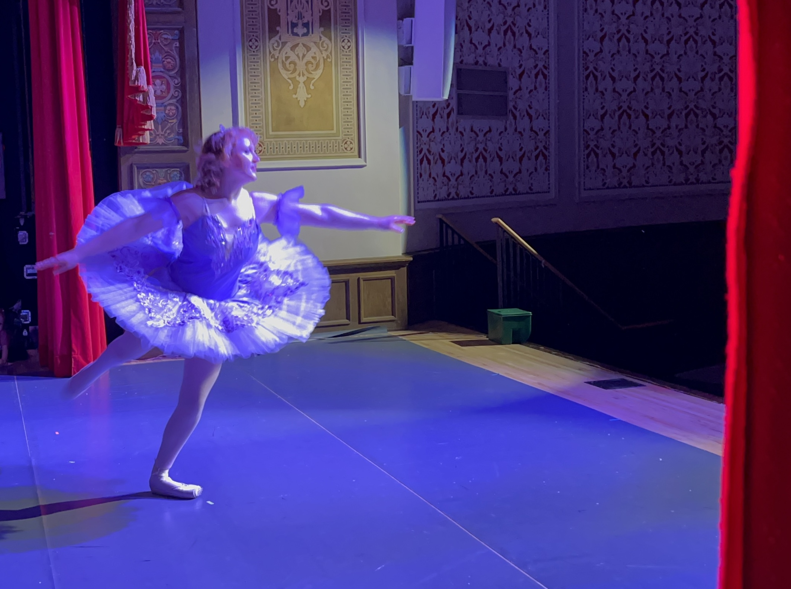

A few of my hobbies include the sports I do, the outdoors, and the arts a crafts I do. I love to ski and dance. Skiing has been a huge part of my life since I was very young and I have been racing competitively for seven years. Dancing has also been a big part of my life for fifteen years now. I love both of these activities because they allow me to express myself and stay active. Besides these two main hobbies I also love going on hikes and exploring nature. My family has always gone on hiking vacations to state and national parks so being outside is a big part of my life. I also love arts and crafts like drawing and making things that are useful or wearable. I've dabbled in cosplay but I'd like to get better at sewing to do so. I've made many of my own costumes for Halloween and other events.
 


During my dance years, I've participated in our dance studio's performance of the nutcracker since it was first performed. I played various roled through the years, but I managed to play the mouse king every year. I started skiing when my dad took me and my sister out skiing when we were realy little. I started racing in 7th grade. I've raced slalom most of my years but recently I've started racing giant slalom as well. My favorite ski memory from high school is skiing with my childhood best friend, with amazing coaches. My favorite recent ski memeory is meeting my partner on the college team.
I love to be a part of my family's summer vacations and they are some of my favorite memories in general so I don't think I could pick a favorite. Some cool places I've been include going to the Redwoods, Olympic National Park, and the Tetons.
I enjoy drawing in my free time, and I love to create things that are useful or are funtional such as clothing or costumes. I've made a few costumes for Halloween or cosplay and I'd like to further my craftng skills to make some really cool pieces in the future.
These activities are important to me because they make up who I am. I also think they are good conversation starters and it help to make friends with similar interests.